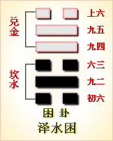

第四十七卦初六爻详解 第四十七卦九二爻详解 第四十七卦六三爻详解
第四十七卦九四爻详解 第四十七卦九五爻详解 第四十七卦上六爻详解
周易第四十七卦 困 泽水困 兑上坎下
困：亨，贞，大人吉，无咎，有言不信。
彖曰：困，刚掩也。险以说，困而不失其所，亨;其唯君子乎?贞大人吉，以刚中也。有言不信，尚口乃穷也。
象曰：泽无水，困;君子以致命遂志。
初六：臀困于株木，入于幽谷，三岁不见。象 曰：入于幽谷，幽不明也。
九二：困于酒食，朱绂方来，利用亨祀，征凶，无咎。象曰：困于酒食，中有庆也。
六三：困于石，据于蒺藜，入于其宫，不见其妻，凶。象曰：据于蒺藜，乘刚也。入于其宫，不见其妻，不祥也。
九四：来徐徐，困于金车，吝，有终。象曰：来徐徐，志在下也。虽不当位，有与也。
九五：劓刖，困于赤绂，乃徐有说，利用祭祀。象曰：劓刖，志未得也。乃徐有说，以中直也。利用祭祀，受福也。
上六：困于葛藟，于臲卼，曰动悔。有悔，征吉。象曰：困于葛藟，未当也。动悔，有悔吉，行也。
困卦卦象，泽水困卦的象征意义
困卦，这个卦是异卦相叠，下卦为坎，上卦为兑。坎为水在下，兑为泽在上。泽水落入坎水，泽水减少;坎水流入东海，坎水减少，水势越来越少就会遭受穷困。从另一个角度来分析，两水合一，水势增大而成灾，灾难就会给天下人带来穷困。
从卦象上看，坎为险在下，兑为悦在上。这又意味着先遇危险而后受困，后因困难克服而喜悦。这意味着陷入困境，才智难以施展，仍坚守正道，自得其乐，必可成事，摆脱困境。
困卦位于升卦之后，《序卦》之中这样解释道：“升而不已必困，故受之以困。”一直升进，最后总会遇到困境。在困境之中，正好可以考验人格，并且会出现转向通达的契机。
《象》中这样解释困卦：泽无水，困;君子以致命遂志。这里指出：困卦的卦象是坎(水)下兑(泽)上，为泽中无水之表象，象征困顿;作为君子应该身处穷困而不气馁，为实现自己的志向，不惜牺牲生命。
困卦象征着困顿，告诫人们困境求通的道理，属于中上卦。《象》曰：时运不来好伤怀，撮上押去把梯抬，一筒虫翼无到手，转了上去下不来。
【困卦卦象，泽水困卦的象征意义释义】
此卦卦名为困。甲骨文中的“困”字是一个房屋里面长着树木。屋子里面怎么会长着树木呢?原来是树木与杂草充满房屋的意思。这样的房子，肯定是没人住的。所以《说文》中说：“困，故庐也。”也就是说是被人废弃的房子。可是这种房子真的没人住吗?有，流浪的穷苦人会临时手巴这里当作一个安身的家。所以困的引申义便是穷困、贫穷。俗话说“花无百日好，月无三日圆”，升官发财不会没有穷尽的时候,最终也有削官剥职而陷于穷困的时候，所以升卦的后面是困卦。这就是《序卦传》中所说的：“升而不已必困，故受之以困。”
困卦卦画：困卦的卦画为三个阴艾三个阳爻。
困卦卦象：从卦象上进行分析，困卦上卦为兑为泽，下卦为坎为水，大泽的底下有水，则表示大泽水资源枯竭，所以泽上无水，这就是困卦的大形象。泽中没有水,那么泽中的鱼奸等必然无法生存，所以有被困的形象;泽中鱼虾因水少而亡，那么居于泽旁的人们自然会无所渔猎，所以会导致生活穷困，这是困卦表达的另一层含义。
关键词：周易,困卦,泽水困,兑上坎下
困卦：亨通。占问王公贵族得吉兆，没有灾祸。有罪的人无法申辩清楚。
初六：臀部挨了刑杖打，被关进牢房，三年不见外界天日。
九二：酒醉饭饱，穿红衣的敌人来犯，于是祭犯求神。占问出征，得凶兆。没有灾祸。
六三：被捆在嘉石上示众，又被关在四周有蒺藜的牢里，释放回到家里，妻子却不在了，凶险。
九四：犯人被关在囚车里，慢慢走来。这很不幸，但最后被释放了。
九五：被穿红衣的人抓去，割掉鼻子，砍断了脚，后来逐渐逃脱，赶快祭祝求神保枯。
上六：被关在四周有葛廷和木桩的监狱里，想动身越狱的话，就会悔上加悔。占问出征，得到吉兆。
①困是本卦的标题。困的意思是困厄，倒霉和关押。全卦专讲刑狱。 “困”字与内容有关，又是卦中多见词，所以用作标题。
②言：用作 “愆”，意思是罪过。信：申辩，说清楚。
③困：这里的意思是挨打。株 木：指打人的刑杖。
④幽谷;这里指监狱。
⑤觐(di)：看见。
(6)朱绂(fu)：红色的服装，这里代指穿红色服装的民族。
(7)石：嘉石。 古代树立在朝门左边当众的地方，用于惩罚犯人。
(8)：蒺藜：这里代指监 狱。
(9)徐徐;慢行的样子。
(10)金：禁。金车：关押犯人的囚车。
(11)劓(yi)：割掉鼻子。刖(yue)：砍掉脚。
(12)徐;逐渐。说：用作 “脱”。
(13)葛藟(lei)：一种有刺的蔓生植物，种在监狱外，以防犯人逃跑。
(14)臲兀(nie wu)：木桩，围在监狱外，防止犯人越狱。